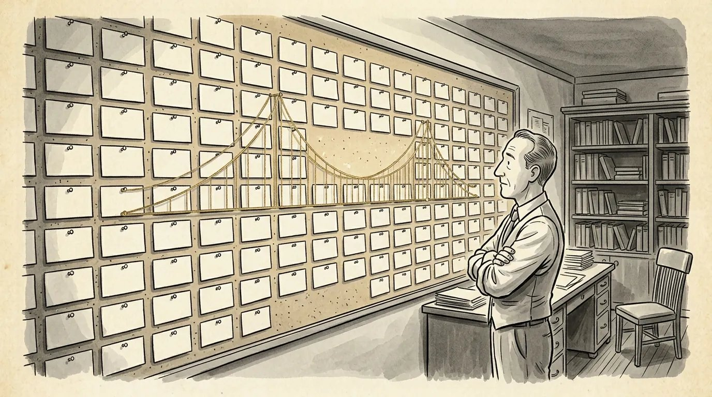

How to write a movie outline before you write page one
Most scripts that fall apart were broken before the first scene was written. Here's how to outline a screenplay so you find the problems while they're still cheap to fix.


Why outline a screenplay at all
An outline lets you find a story's problems when they cost an hour to fix instead of a month. Learning how to write a movie outline is really learning to make your big structural decisions before you're attached to pages you love.
Most scripts that don't work fail on story, not on dialogue. The second act runs out of road, the midpoint doesn't change anything, the ending isn't earned. Those are outline problems. On five pages you can see them. On 110 pages they hide under good scenes.
Some writers say they never outline. Usually that means they outline in their heads, or they write a rough draft that works as an outline and then throw most of it away. Either is fine if it works for you. But if you've stalled around page 50 more than once, an outline is the fix.
There's a professional reason too. On assignment, writers are commonly asked to turn in an outline or treatment before going to script, so the producer and the studio can sign off on the story first. Getting comfortable with outlining now is practice for that conversation.
How to outline a screenplay: five methods
The five common methods are the beat sheet, index cards, the step outline, the sequence approach and the scriptment. They aren't rival religions. Most working writers mix them, moving from loose to detailed as the story firms up.
The beat sheet. A list of the story's key turns, usually a page or two. Blake Snyder's Save the Cat! beat sheet is the best known: 15 beats placed at rough percentages of the script, with the catalyst around 10 percent, the midpoint at 50 and the "all is lost" moment around 75. Use it to check whether your story turns, not to dictate exactly where.
Index cards on a corkboard. One scene per card, pinned in rows. The version popularized by Save the Cat!, often called "the Board," lays the cards out in four rows: Act One, the first half of Act Two, the second half of Act Two, and Act Three. Many writers who use it aim for around 40 cards. The value is physical. You can see a sagging act at a glance, move a scene with your hand, and color-code subplots so you notice when the B story disappears for 30 pages. Software corkboards work the same way.
The step outline. A numbered, scene-by-scene document. Each step is a scene heading and a few sentences: what happens, what changes, what we learn. It's the workhorse of development because it shows cause and effect. You can check that each scene leads to the next instead of simply following it.
The sequence approach. Instead of three huge acts, you think in about eight sequences of roughly 10 to 15 minutes each: two in Act One, four in Act Two and two in Act Three. The method is associated with Frank Daniel, who built USC's screenwriting curriculum around it, and was laid out by his student Paul Gulino in Screenwriting: The Sequence Approach (a good overview is here). It's especially useful for second acts, because one 60-page middle becomes four smaller problems, each with its own goal and its own turn.
The scriptment. A hybrid of treatment and script: prose with scene headings and some dialogue, sometimes running close to full length. James Cameron is the best-known practitioner, and he has described his Strange Days scriptment as "as long as a script, but messy and undisciplined" (via Final Draft). It's a heavy tool, best for writers who discover the story by writing it.
How detailed a screenplay outline should be
A screenplay outline should be detailed enough that you can say what every scene is for, and loose enough that the draft still has room for discoveries. There's no standard length. Some writers work from a page of beats; others, as MasterClass notes, write outlines half as long as the finished script.
Here's a practical test. For each scene, can you finish the sentence "This scene exists so that..."? If you can, the outline is detailed enough. If the answer is "so we get to know her" or "so things get worse," you're not done. Get to know what about her? Worse how, and because of whom?
What you don't need is dialogue, polished description or every transition. If a great line comes to you, write it in the margin and keep moving. The outline is a tool, not a document anyone is grading.
How to write a movie outline, step by step
Work from the big picture down: premise, ending, major turns, sequences, then scenes. Each pass makes the next one easier.
- Lock the logline. If you can't say the story in a sentence, an outline won't save it. Start with how to write a logline.
- Decide the ending, then the opening. Knowing where your protagonist lands tells you where they have to start. The opening image and the final image should talk to each other.
- Find the big turns. The inciting incident, the break into Act Two, the midpoint, the low point, the climax. This is your beat sheet. My three-act structure examples show how these land in real films.
- Break it into sequences. Group the space between turns into chunks, each with its own mini-goal and its own reversal.
- Fill in the scenes. Now write the step outline. One scene, a few sentences, what changes.
- Thread the B story. Track your main relationship or subplot across the whole outline. It should touch every act and pay off near the climax.
How to test an outline before you start drafting
Test an outline by telling it out loud, checking cause and effect, and making sure your protagonist drives every major turn. Fixing a problem here takes minutes. Finding it on page 80 takes a rewrite.
- Tell it out loud in five minutes. Wherever you lose the listener, or yourself, there's a soft spot.
- Listen for "and then." Scenes connected by "so" or "but" are causing each other. A run of "and then" means events are just lining up.
- Check who makes the turns. At each act break, does your protagonist make a choice, or does something simply happen to them?
- Check the midpoint. Something should be different after it: the goal, the stakes or what the hero understands.
- Cut the scenes where nothing changes. If a step has no "what changes," it's a candidate to go.
- Hand it to someone and ask them to tell it back. What they forget is what isn't landing.
Another good test is to write a short treatment from your outline. Turning a list of scenes into a few pages of readable prose shows you quickly whether the story has momentum. I walk through that in how to write a film treatment.
A screenplay outline example
Here's an invented step outline excerpt covering most of a first act, to show the level of detail that's useful. The story is made up for this post.
1. INT. RADIO BOOTH - NIGHT. RAY KOWALSKI, 50s, hosts a late-night call-in show on a small AM station in a lake town. Warm on air, empty off it. His producer, JUNE, tells him the station has been sold and the show probably won't survive. Changes: Ray needs a reason to be heard.
2. INT. RADIO BOOTH - LATER. A calm caller describes a house fire on Birch Street in precise detail, then hangs up. Ray plays it as a bit for the audience. Changes: the listeners laugh; Ray almost does.
3. EXT. BIRCH STREET - DAWN. Driving home, Ray passes fire trucks. The house matches the caller's description down to the color of the door. Changes: the call was real, or it was a warning.
4. INT. POLICE STATION - DAY. Ray brings the recording to DET. ANA SOLIS, who wants to know why the caller chose his show. Changes: Ray is now part of the case, and possibly a suspect.
5. INT. STATION OFFICE - DAY. The new owner has heard about the call. Listenership spiked overnight, and he wants more of whatever that was. Changes: the thing that endangers Ray also saves his job.
6. INT. RADIO BOOTH - NIGHT. Ray opens the lines, half hoping the caller won't phone in. He does, with a second address. Ray can cut to a commercial and call Solis, or keep him talking on air. He keeps him on. Changes: Ray chooses the ratings, and what happens next is on him. End of Act One.
Notice that every step ends with what changes, and that the act break is a choice Ray makes, not something that happens to him. There's no dialogue and no camera direction. That's the right level of detail for a working outline: specific enough to test, light enough to rewrite in an afternoon.
Common screenplay outline mistakes
The biggest mistake is outlining what happens without outlining what anyone wants. A list of events isn't a story until each event is tied to a character's goal and what stands in the way.
- Outlining forever. An outline is a means, not the work. When you can pass the stress test, start the draft.
- A detailed Act One and Act Three, with "complications" in between. The second act is where outlines save the most time. Give it the most attention.
- Vague steps. "They argue" tells you nothing. About what, and who wins?
- Treating the outline as a contract. If the draft finds something better, follow it, then update the outline so you can see what the change does downstream.
- Forgetting the subplots. If your B story appears in Act One and then again at the climax, the audience will have forgotten it by then.
- Skipping the outline on a rewrite. A quick reverse outline of your current draft, one line per scene, is often the fastest way to see what notes are pointing at. More on that in how to take script notes.
Frequently asked questions
How long should a screenplay outline be?
There's no standard length. Some writers work from a page or two of beats, others from a scene-by-scene outline of 20 pages or more. It's long enough when you can say what every scene is for.
What's the difference between an outline and a treatment?
An outline is a working map for the writer, often in shorthand, scene by scene or beat by beat. A treatment tells the story in readable prose for someone else, like a producer or executive.
Do professional screenwriters outline?
Most do in some form, even if it's only a beat sheet or a wall of cards. On assignment, writers are commonly asked to deliver an outline or treatment before the first draft.
What is a step outline?
A step outline is a numbered, scene-by-scene list. Each step gives the scene heading and a few sentences on what happens and what changes, so you can check cause and effect before drafting.
Can you give notes on my story before I write the script?
Yes. My treatment analysis is $350 and includes a live call of one to two hours. Once you have a full draft, feature screenplay notes are $600.